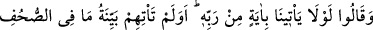
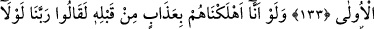
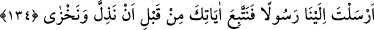
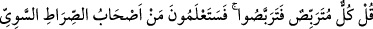
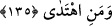

YAKINDA ANLAYACAKSINIZ
133. Onlar: “(Muhammed) bize Rabbinden bir mûcize getirmeli değil miydi?”
dediler. Önce gelen kitaplardakinin apaçık delili (Kur’an) onlara gelmedi mi?
134. Eğer biz, bundan (Kur’an’dan) önce onları bir azapla helâk etseydik,
muhakkak ki şöyle diyeceklerdi: “Ya Rabbi! Bize bir elçi gönderseydin de, şu
aşağılığa ve rüsvaylığa düşmeden önce âyetlerine uysaydık!
135. De ki: “Herkes beklemektedir: Öyle ise siz de bekleyin. Yakında
anlayacaksınız; doğru düzgün yolun yolcuları kimmiş ve hidayette olan kimmiş!”
“Onlar:” Kureyşli kâfirler: Muhammed, Mûsâ ve İsâ gibi peygamberliğinin delili
olarak “bize Rabbinden” bizim ve güvendiğimiz kişilerin teklif ettiği “bir mûcize
getirmeli” bir âyet getirmeli “değil miydi?” dediler.” Onlar inadda öyle bir seviyeye
ulaşmışlardı ki gözleriyle gördükleri mûcizeleri, âyetlerden/mûcizelerden saymadılar,
hatta bu ağır sözü söylemeye cür’et ettiler.
“Önce gelen kitaplardakinin apaçık delili (Kur’an) onlara gelmedi mi?”
Buradaki soru, inkâr içindir. “
” aklî ve hissi apaçık delâlet demektir. Burada
onunla kasdedilen, içinde insanlar için açıklama bulunan Kur’an’dır. “Önceki
kitaplarda bulunan” dan maksad, tüm peygamberlerin üzerinde ittifak ettikleri hak
inançlar ve asıl hükümlerdir. “
”, sahîfe’nin çoğuludur. Sahîfe, üstüne yazı yazılan
nesnedir. Hz. Âdem’e indirilenler içinde hecâ harfleri tek başına bir sayfaydı. Âyetteki
“suhuf” ile kasdedilen Tevrat, İncil, Zebur ve diğer semâvi kitaplardır.
Bu durumda cümlenin anlamı şöyledir: Diğer âyetler/mûcizeler onlara gelmedi mi?
Hâssaten önce gelen sayfalardakinin/kitaplardakinin apaçık delili gelmedi mi? Yani
i‘câz konusunda âyetlerin/mûcizelerin anası ve en büyüğü olan âyet onlara geldi. İşte o,
Kur’an’dır. Onda bütün ilâhî kitaplarda olanlar açıklanmıştır. Kur’an, önceki ümmetlere
indirilen kitaplarda olanların ve önceki ümmetlerden haber verdiği haberlerin
doğruluğuna şâhiddir. Çünkü o, i’câzı sâyesinde başkasının kendi doğruluğuna şâhidlik
etmesine muhtaç değildir. Diğer kitapların doğruluğuna şâhidlik etmeye ise müstehaktır,
lâyıktır. Kur’ân’ı getiren ümmî olduğu, önceki kitapları ve onları öğretenlerden